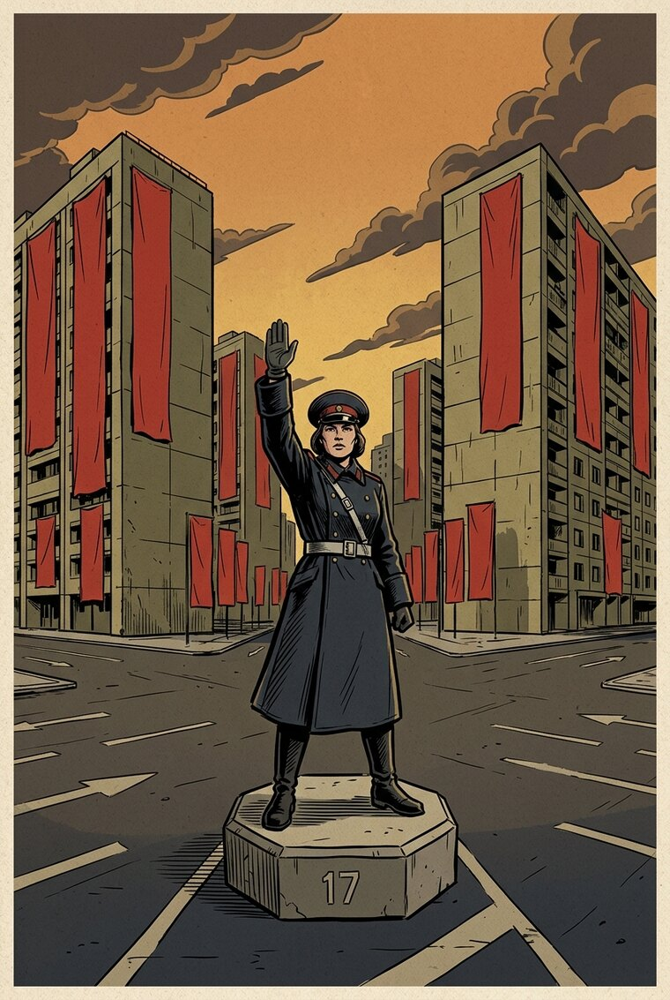
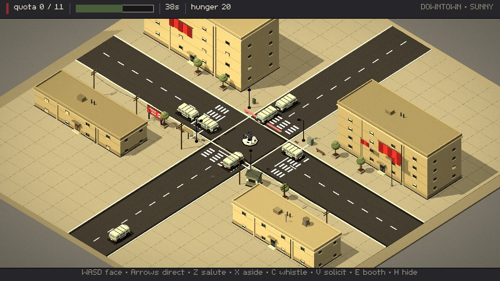
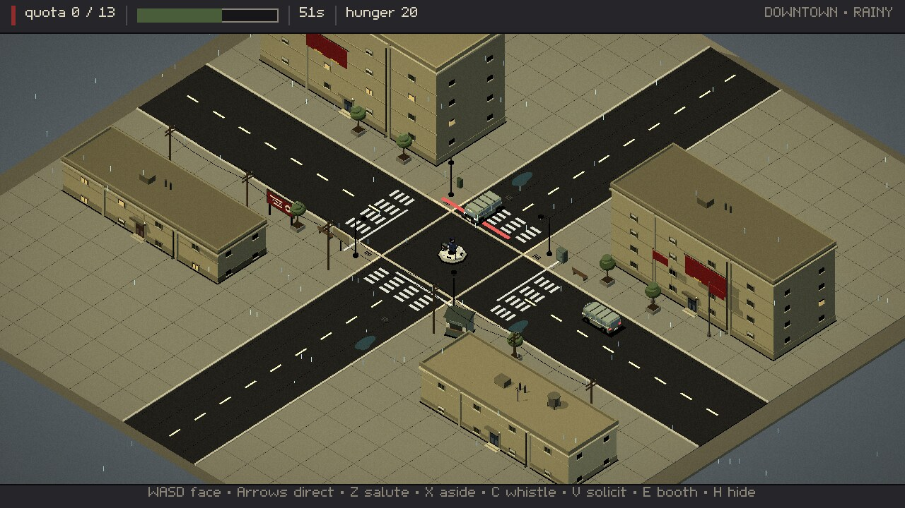
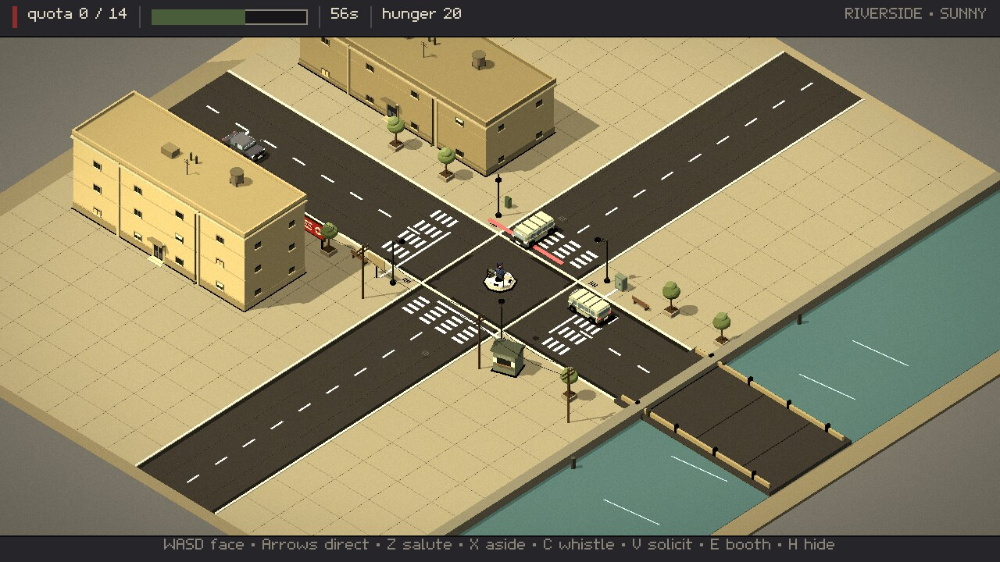
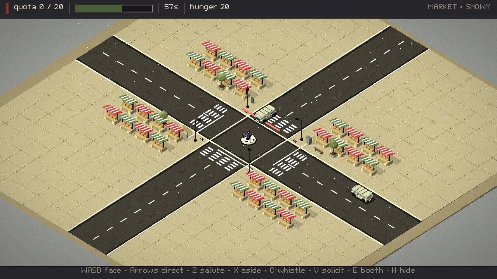
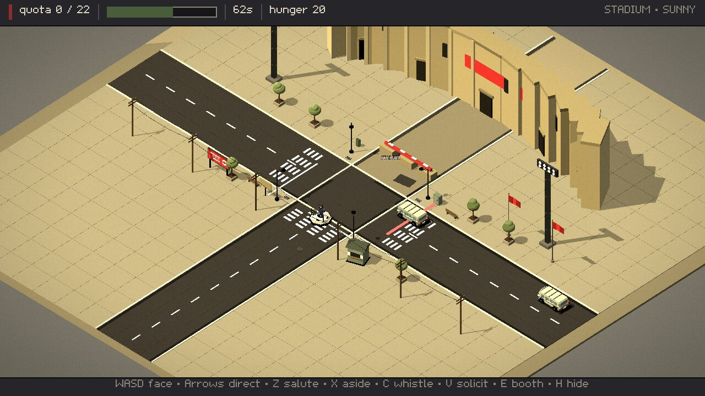
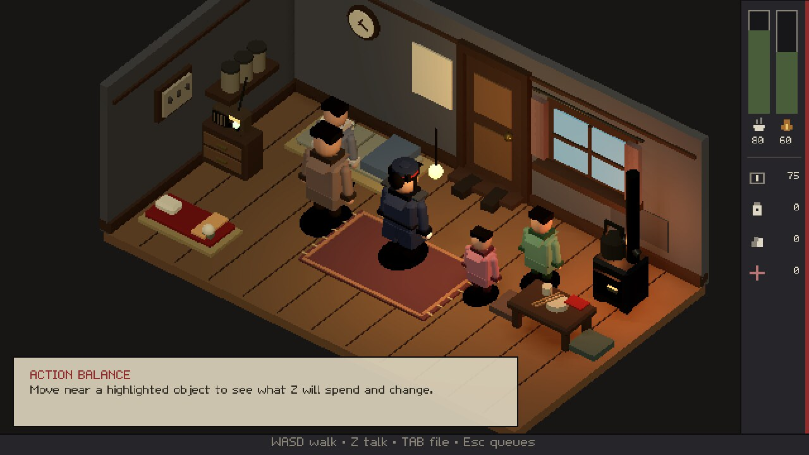
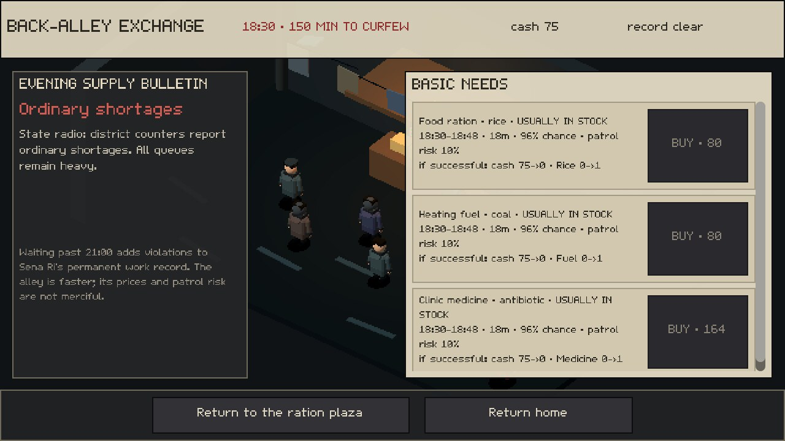

SoonPC · 2026
Ministry of Movement — Sunward People's Republic of Soryang
Directorate of Crossings · Posting Order № 17
INTERSECTION 17
The crossing must move. The family must eat. The Committee is watching.
You are Sena Ri, marshal of the seventeenth crossing. Each morning you take the podium; each evening you take the queue. Direct each car where it signals. Salute the gold pennants without fail. Pull the defective aside and fine them — or don't, and pocket the difference.
Rice, coal, antibiotics: the shops close at curfew, and the alley never does. Letters arrive without postmarks. The radio is precise about everything except the diverted grain. Thirty days. Several endings. One record, permanent.
A traffic-post bureaucracy simulation in a low-poly 3D diorama, filed in the pixel grain of a state document.

02 — Footage, Camera 01
Recorded by the Directorate for training purposes. The marshal was not informed.
03 — Photographic record
{kind=link}

{kind=link}

{kind=link}

{kind=link}

{kind=link}

{kind=link}

{kind=link}

04 — Duties of the marshal
- Keep the crossing moving. Quota is quota.
- Direct each car where it signals — left for left, right for right, straight when dark.
- Salute Party pennants as they pass. Failure is noted. Notes are kept.
- Pull defective vehicles aside and fine them. Or wave them through — and pocket the difference.
- After the shift, the second shift: rice, coal, medicine. Public queues close at curfew. The alley never does.
- The radio speaks at 18:00 precisely. It is precise about everything else, too.
- Letters without postmarks are not to be read. Read them.
- Thirty days. Several endings. One record, permanent.
05 — Notification of release
No storefront has yet been assigned to this posting. To be notified when the crossing opens, file a request with the issuing office, or consult the bureau's public board.
Issued by Gand Games. No ads. No tracking cookies. The price, when assigned, is the price.